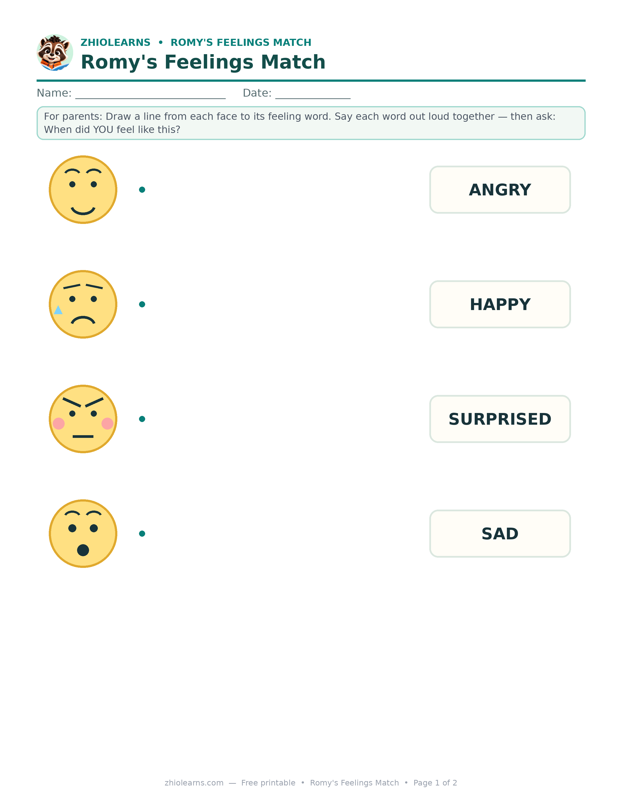

When the Cup Is the Wrong Colour: Reading Aloud to Help Little Kids Name Big Feelings
It was the blue cup. Or rather, it wasn't. Breakfast was on the table, everyone was already five minutes behind, and the cup — the ordinary, wash-it-every-day blue cup — was apparently an emergency.
If you live with a 3- to 6-year-old, you know this scene. And you probably already suspect the truth every parent learns eventually: the meltdown is almost never about the cup. It's about a feeling that got too big for a small body, at a moment when the words for it weren't within reach.
That's the part we can actually help with. Not by preventing feelings — impossible, and not the goal — but by handing over the words before the next storm, in the calmest five minutes of the day: reading together.
Why a name changes everything
A feeling with a name is a feeling a child can point at. "I'm frustrated" is something a 5-year-old can say to another human. An unnamed frustration just has to come out sideways — as tears, as shouting, as a thrown blue cup.
Psychologists sometimes call this "name it to tame it," and with preschoolers you can watch it work in real time. The first week, your child borrows the words from you. A month later, mid-wobble, you hear a small voice say "I'm frus-trated" — and the wobble stays a wobble instead of becoming a flood.
The catch: feelings vocabulary can't be taught in the middle of a meltdown. Nobody learns anything mid-storm. It has to be practised when everyone's calm, fed, and curled up somewhere comfortable. Which is exactly what a story is for.
Reading aloud, the feelings way
You don't need a special technique or a teaching degree. Three small habits turn an ordinary read-aloud into feelings practice:
1. Stop at the face. When a character's face changes, pause. "Look at Romy's face here. What do you think he's feeling?" Wait longer than feels natural. Four-year-olds think slowly and answer honestly — if you give them the silence to do it in.
2. Wonder, don't quiz. "I wonder why he's sad…" lands completely differently from "Why is he sad? What did we say?" One opens a conversation; the other feels like a test with a right answer, and small children shut down under tests. Wondering aloud also models the exact skill you're building: thinking about feelings in words.
3. Borrow the story later. This is where the real return shows up. Two days after the book, in a hard moment, you get to say: "This is like Romy in the forest, remember? He felt stormy too." You're no longer lecturing. You're remembering something together — and children will accept almost anything that arrives as a shared memory.
Three sentences you can steal
Parents often tell us the hardest part isn't knowing what to do — it's finding any words at all at 7 a.m. with a crying child and a cold coffee. Keep these in your pocket:
For the cup moment: "You wanted the blue cup. The green one feels wrong today. That's frustrating."
For the storm: "Your feeling is really big right now. I'm staying right here. We'll talk when it's smaller."
For afterwards: "That was a stormy one. What helped it pass — the cuddle, or the water?"
Notice none of them fix anything. That's deliberate. A named feeling, plus a calm adult nearby, is most of what a young child needs. The fixing can wait until the feeling has shrunk back to talking size.
What not to do
- Don't read feelings books only after bad behaviour. If the feelings book appears only when someone's in trouble, it becomes a punishment with pictures. Read it on the good days, in pyjamas, for fun — that's when it goes in.
- Don't correct the label. If your child says the character is "angry" and you'd say "disappointed," let theirs stand. The win is that they're labelling at all. Precision comes later, on its own.
- Don't rush the fix. "You're fine!" is meant kindly, but to a child it translates as "your feeling is wrong." Try "You're upset. That makes sense" first. Fine comes later.
The book we reach for
This is, honestly, why Romy and the Forest of Feelings exists. Romy walks into the forest with feelings he can't sort out, and meets them one at a time — big ones, prickly ones, quiet ones — until each has a name and he can carry them home. We also keep a free read-aloud story here on the site, Romy's Big Stormy Feeling, which is the cup morning, more or less exactly, with the raccoon standing in for every child we've ever met.
Five minutes. One story. A few new words quietly installed for the next hard morning. That's the whole program — and on the mornings it works, it feels like someone turned the volume of the whole house down by half.
🎮 Play it together: Romy's Feelings Friends
Our newest game turns this article into play: five short levels where your child matches faces to feelings and helps Romy's friends through little everyday moments. Two levels are free for everyone.
Play Feelings Friends →🖨️ Free printable: Romy's Feelings Match

Match each face to its feeling word, draw a line to the moment that fits, then draw your own feeling face. One page, ages 3–6, free — no sign-up needed to print it.
Download the free printable (PDF)📚 Keep reading together
Find Romy and the Forest of Feelings and Romy's other books in our little shop — and read Romy's Big Stormy Feeling free in the Storytime section.
See Romy's books →